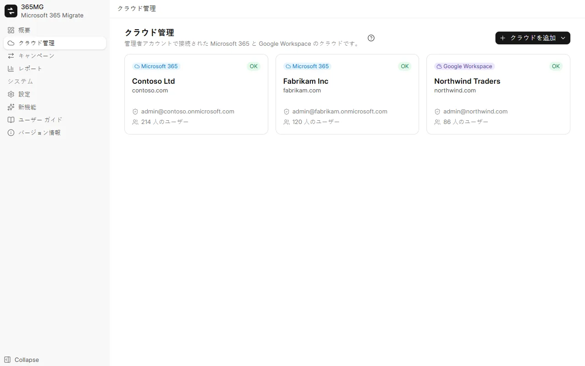
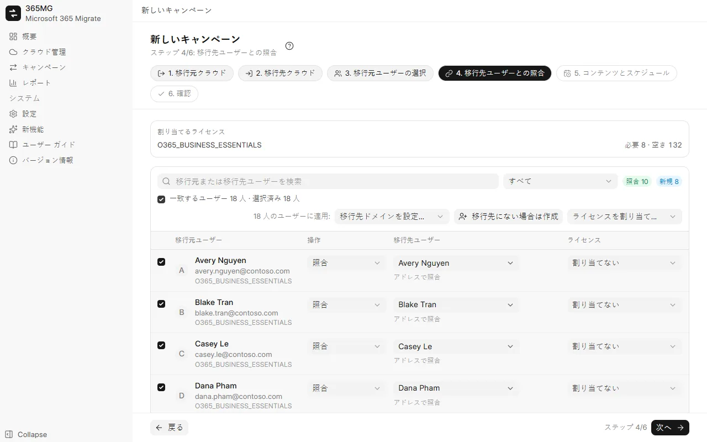

ユーザー ガイド
365MG のインストールから最後のレポートまで。各パートにスクリーンショットがあり、ガイド ツアーではアニメーション カーソルで主な作業を再現します。
1. インストール
365MG は Windows 10 または 11 (64 ビット) で動作し、Windows に標準で含まれる Microsoft Edge WebView2 を使用します。インストーラーは作成者が提供します。下記のアドレスまでご連絡ください。
365MG_x.y.z_x64-setup.exeを実行し、インストーラーの指示に従います。- スタート メニューから 365MG を開きます。データはこの PC の
%APPDATA%\com.tuanhd.365mgに保存されます。 - 設定 で、インターフェイスの言語と、セカンダリ ドライブ上の一時フォルダーを選択します。
2. 開始する前に
- 移行元と移行先の両方のテナントのグローバル管理者アカウント。
- 作成または対応付けするユーザー分の、Exchange Online (および OneDrive) を含む移行先の十分なライセンス。
- コピー中に電源を入れたままにでき、高速で安定した接続を持つ PC (データはこの PC を経由します)。
- 一時フォルダー用のセカンダリ ドライブ。ここを経由するのは 4 MB 以上の OneDrive ファイルのみです。
3. テナントを追加する
- テナント を開き、テナントを追加 をクリックします。
- 開いたブラウザー ウィンドウでグローバル管理者としてサインインし、アクセス許可に同意します。
- 365MG に戻ると、テナントのドメイン、アクセス許可の確認結果、ライセンスが表示されます。管理センターで何かを変更した後は アクセス許可を確認 を使用してください。

4. キャンペーンを作成する
キャンペーンは、ユーザーのまとまりを 1 つの移行元テナントから 1 つの移行先テナントへ移します。ウィザードは 6 ステップで、タイトル・ステップ・フィルターは常に上部に、戻る / 次へ / キャンペーンを保存 は常に下部に表示されます。
- 移行元テナント と 移行先テナント: それぞれ 1 ステップです。
- 移行元ユーザーの選択: ライセンス、ドメイン、状態で絞り込み、一覧でユーザーを選んで選択済みに追加します。
- 移行先ユーザーとの照合: 365MG がアドレス、エイリアス、表示名から移行先ユーザーを提案します。行を選び、移行先ドメインを設定…、移行先にない場合は作成、ライセンスを割り当て… を一括で使います。一覧上部のチェック ボックスで、フィルターに表示されたすべての行を選択できます。
- コンテンツとスケジュール: メール、OneDrive、連絡先、予定表、迷惑メールのスキップ、1 回または N 時間ごとの実行、スレッド数。
- 確認: 概要と必要なライセンスを確認し、キャンペーンを保存 をクリックします。

5. 移行先ユーザーを準備する
キャンペーン ページで ユーザーの作成とライセンスの割り当て をクリックすると、「新規作成」とマークされた移行先ユーザーが作成され、すべてのユーザーに選択したライセンスが割り当てられます。失敗した行には理由が表示されます。修正してからもう一度実行してください。
新しいユーザーにはランダムな初期パスワードが設定され、初回サインイン時に変更する必要があります。⋯ メニューから CSV としてエクスポートし、ユーザーに渡した後、ファイルを削除してください。
6. ウェーブとドライ ラン
ユーザー タブでユーザーをチェックし、ウェーブへ移動 を使用して大規模な移行を分割します。実行バーでは 1 ウェーブずつ開始でき、スケジュールされた実行では既に開始したすべてのウェーブの同期が続けられます。
ドライ ラン (件数のみ) は両側を読み取り、実際の実行でコピーされるアイテム数、ファイル数、メガバイト数を報告します。移行先には何も書き込まず、すべての移行先メールボックスと OneDrive が存在することも確認します。
7. 実行、一時停止、再開
各キャンペーン タブの上部にある実行バーには、キャンペーンが現在行っていることと次に行うことが表示されます。
| 状態 | 表示内容 | ボタン |
|---|---|---|
| 未実行 | スケジュール | 今すぐ開始、ドライ ラン |
| コピー中 | 経過時間、実行中と待機中のスレッド | 一時停止 |
| 一時停止中 | 前回の実行 | 再開 (残りをコピー) |
| 同期済み | 完了日時と次回のスケジュール実行 | 再実行 (新しいデータを取得)、スケジュールを一時停止 |
一時停止するとスレッドが停止し、スケジュールも保留されます。コピー済みのものはすべてジャーナルに残るため、再開しても二重にコピーされることはありません。コピーの進行状況 タブには、各メールボックスと OneDrive が速度とともに表示されます。処理が進まなくなったスレッドは自動的に再起動されます。
8. 判断が必要
実行中に自動で解決すべきでない事象が発生すると、キャンペーンに 判断が必要 パネルが表示されます。種類ごとにグループ化され、説明と各ユーザーに対する操作が示されます。
| 種類 | 対処方法 |
|---|---|
| 移行先メールボックスが機能していない | ユーザーにライセンスを割り当て (または共有メールボックスに変換し)、15～60 分待ってから 再確認 します。意図的にライセンスを削除した場合は このユーザーをスキップ します。 |
| 移行先に OneDrive がない | OneDrive 作成コマンドをコピー して SharePoint 管理者として Windows PowerShell で実行するか、ユーザーに一度サインインしてもらいます。その後、再確認します。 |
| 移行先ユーザーが再作成された | 新しいメールボックスまたは OneDrive に 最初から再コピー するか、スキップします。 |
| 結果が不明なアイテム | 再送信 (既にあるアイテムは 2 件になります) するか、これらのアイテムをスキップ します。 |
| 移行先の件数がコピーした件数より少ない | 通常は移行先で意図的に削除されたものです。確認しました で了承します。 |

9. メール グループ
メール グループ タブで移行元のグループを選択し、グループの作成とメンバーの追加 をクリックします。Graph で作成できるのは Microsoft 365 グループのみであるため、配布リストとメールが有効なセキュリティ グループは同じエイリアスを持つ Microsoft 365 グループになり、メンバーの受信トレイに配信され、外部の送信者からのメールを受け付けます。移行先ユーザーのないメンバーはグループごとに一覧表示されます。
10. レポート
レポート には、キャンペーンごとに、ユーザー別および合計の移行元とコピー済みの件数、確認が必要なユーザー、グループ、メモが表示されます。HTML をエクスポート は単一のページ (ライト/ダーク表示、検索とフィルター付き) を書き出して開きます。CSV エクスポートではユーザーまたはグループの一覧を出力します。
11. 設定と言語
- 言語: 9 つの言語があり、すぐに適用されます。アラビア語ではレイアウトが右から左に切り替わります。
- 一時フォルダー (スプール): C ドライブ以外に配置してください。
- スレッドを停滞と見なすまでの時間: スレッドを再起動するまでの、進行のない時間 (分) です (最大 2 回)。
12. 更新
新機能 には各バージョンの変更点が一覧表示されます。新しいバージョンが公開されるとサイドバーに表示され、x.y.z に更新 をクリックするとダウンロード、作成者の署名の確認、アプリの終了、インストール、再起動が行われます。実行中のキャンペーンは先に一時停止し、更新後に再開してください。
13. トラブルシューティング
| 症状 | 原因と対処 |
|---|---|
| 「データ移行アプリのアクセス許可が有効になるのを待っています」 | 新しいアプリが Exchange と SharePoint で受け入れられるまでには数分かかります。実行は最大 30 分間自動的に待機します。 |
| 速度が低下し、「調整 (スロットリング)」のメッセージが多数表示される | Exchange と SharePoint はメールボックスごと、アプリごとに制限を設けています。スレッドを増やしても 1 つのメールボックスは速くなりませんが、多数のメールボックスが待機している場合には効果があります。 |
| 移行先の件数が移行元より少ない | レポートのメモを確認してください。スキップされた迷惑メール、判断により除外されたアイテム、移行先で削除されたメールなどが考えられます。 |
| 移行先のメールボックスに既にメールがある | 365MG は初回の実行でそのメールボックスへのコピーを拒否します。他のツールでコピーされていない場合にのみ、キャンペーンで許可してください。 |